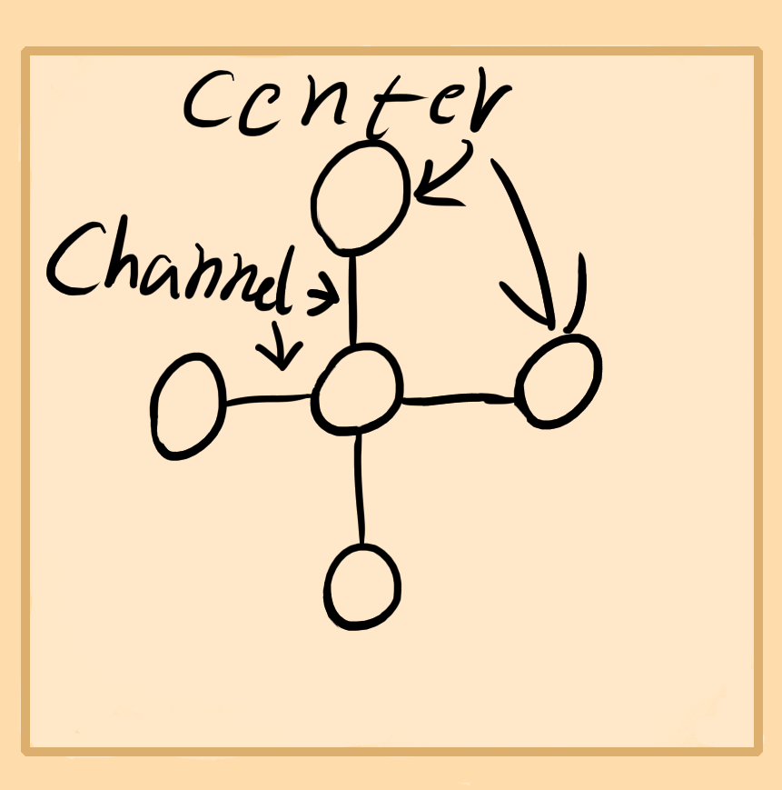
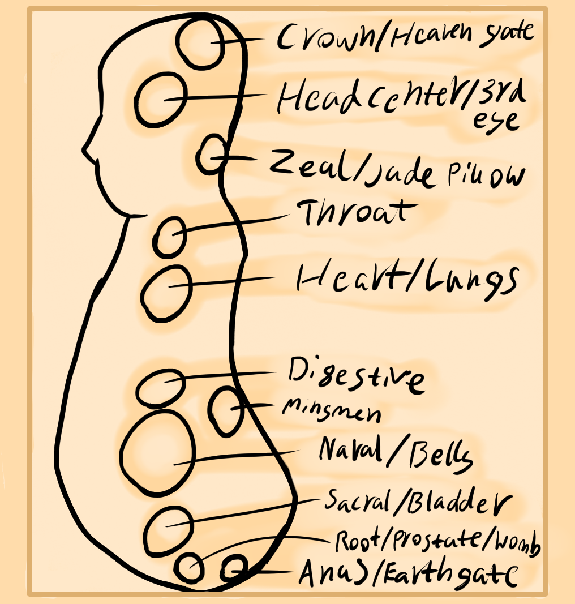
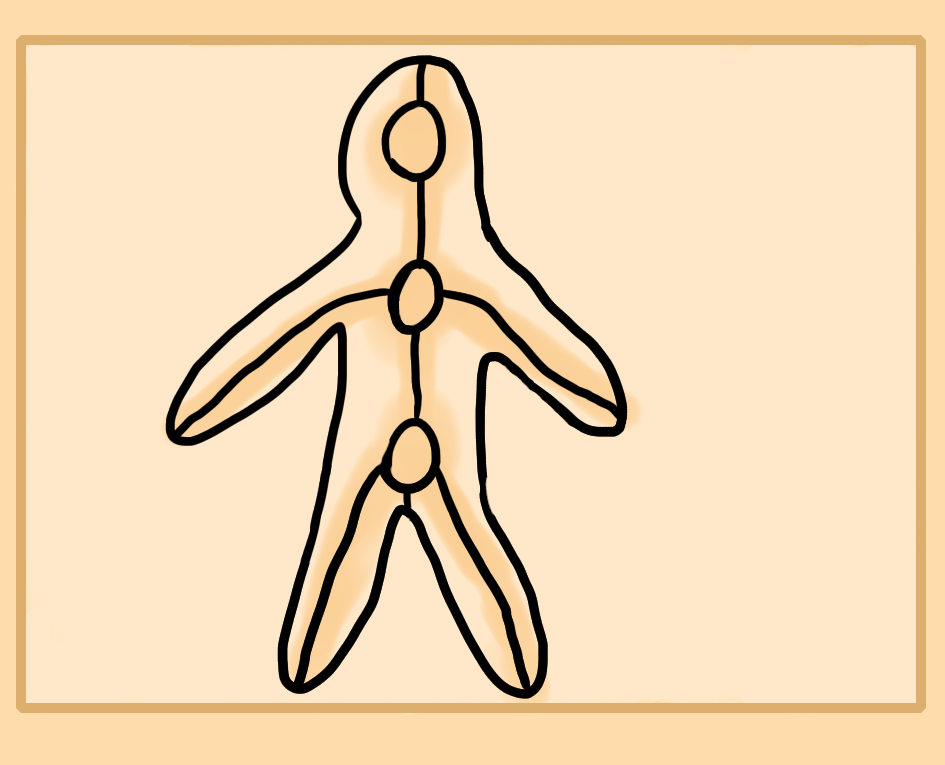
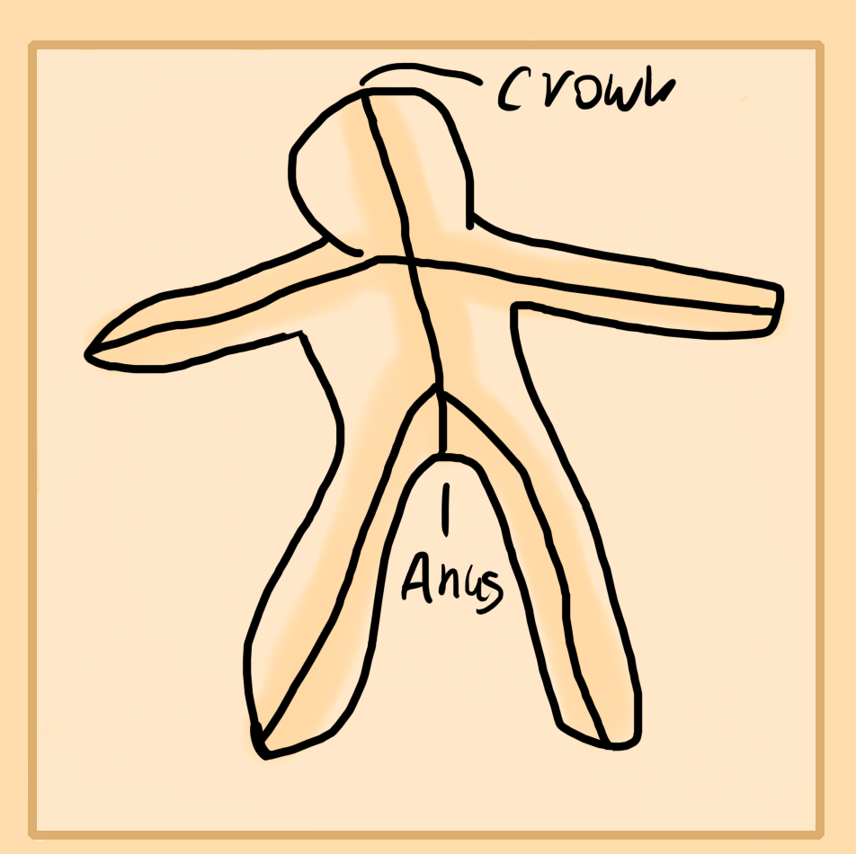

Above is a model of the energetic body. The centers in the central part of the body and head are the bodily centers. Those around the shoulders, hips and limbs are the limb joints which act as minor energy centers. The line running through the body and limbs is the main energy channel.
So we can see that the energy body is comprised mainly of centers and channels. If you want to see a more advanced map of the channels then look up the 12 meridians and 8 vessels. Though I've simplified it heavily to help you learn by only using the central channel that runs through the body.
Similarly a more basic model of the centers relies on just the three major ones in the head, heart and bladder.
Next page I will break down each part and help you to understand them.
What is a Center and Channel?
Centers are areas of space within the body that you can feel an energetic pressure at. Usually organs create their own electromagnetic cloud which becomes its own center.
Then as these minor organ and gland centers collect they form their own major center which is usually called dan tiens, chakras or major centers. These you can think of as big clouds of feeling within the space.
Channels are energetic veins that run all through your body. Normal veins, arteries, lymph channels, urinary, bones, tendons and even muscles all form energetic veins. They may be physical as a bone is or a vein is in its normal form, but they exhume an energetic or spirtual essence which forms its own electromagnetic, spatial pathway which is the energy channel.
The bones, arteries, veins , nerves and muscles form the main channels in your body.
Basic Centers
To the right is a side view of the main centers that we'll work with. First at the bottom is the root which for men is their prostate at the root of the penis. I believe for woman it is their womb, at the end of the vaginal canal. This center handles fertility, life and death, growth as well as fear. It is of the earth/water element.
Next is the sacral. It's organ and function area is within the bladder. It handles regeneration, moisture in the body, emotions and pleasure. It is of the water element.
Third is the naval center. The organs and lower digestion is its major function. Technically there is also a minor center in the upper digestion area around the solar plexus region too. These both handle digestion, inner strength, core power, the external ego or personality and is the cauldron which merges the bodies energies to form a pure energy. This is the fire element in the body and also vaguely the earth element.
Fourth is the heart located in the upper chest. This center stimulates you, creates heat, improves blood circulation and handles the more communal personality. It can be activated heavily through being around friends and family. Another function is that of your breath and lungs. This center controls breath. It's element is fire and air.
Next, fifth is your throat center located in the pit of the throat. It creates sounds when pressure, energy and air is pushed through it. Faculties corresponding to this center is language, speech, knowledge of symbolism and intellectual communication. Its element is aether, space or electromagnetism.
Then is the mid head center or third eye. This dictates imagination, memory, mind, thought, logic, reason, creativity and your ability to perceive the world through your senses. Any thoughts and imaginations use this area. This is of the star or astral energy element.
The last is located around the top back of your head. Kind of around the cowlick of the hair region. Organ wise it is the cerebral cortex. This area controls pure consciousness, it is the gate of heaven while the anus is the gate to earth in the body. Focusing at this center brings pure bliss and peace, authority and rulership, power and a higher sense. Kings and high spiritual masters have this center well developed.
Other Center
Technically any organ forms a center as spiritual centers are simply just areas of space within you that form some significant spiritual area. So any gland as well as joint also forms a spiritual center.
You can also create your own centers in the body as some practices do. Accupoints also become their own spiritual centers or points which are more like very minor centers when stimulated.
Three Major Centers
There are three major centers in your body which control the three major parts of your body. Your legs and pelvic region, arms and torso as well as head.
The flow of energy and blood relates to the diagram drawn. The arteries come out to the arms and legs around the area of where those circles are drawn. Hence your limbs feed from the those energy centers and the mind draws from the mental center.
In Chinese meditation these centers are called dan tien or elixir field, red field, cinnabar field, pill field. The relating major organs for the lower major center is the bladder, heart for middle and brain for upper. Though these centers act more like a congregated mass of organs, diaphragms and other parts which sit here.
In some old meditation the lower center is first filled, then the mingmen point around your mid back will transmute upwards energy to the middle center, then the area where the spine and skull connect again transmutes energy upwards to the head.
Basic Channels
I've drawn a basic channel model which is a line going through the major limbs and central part of the body. There are also more advanced models of the 8 vessels and 12 meridians which run through the muscles, nerves and arteries.
As you practice you will begin to feel more energetic channels running inside and on your body.
The major line that runs from your lower torso to the top of your head is the central channel. Those that run through your arms and legs are minor central channels. These energetically connect the major centers explained about in the last area as well as your joints in the limbs.
In the further chapters on energy meditations you will begin to feel and understand these further.